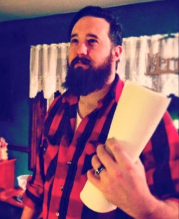

About Me
It's not a story the Jedi would tell...
Grew up in the mean roads of rural New Jersey on a hilltop horse farm. Graduated from Kutztown University with a BA in English before setting off into the world as a copywriter. A lover of logic, I cantilevered myself into working as a back-end data manager. I am now working hard to learn how to code Javascript, so don’t judge too harshly when you click that Portfolio link.
I spend the majority of my free time with my wife and one year old daughter. I enjoy terrible movies, terrible food, and good peaty single malt scotch. To me, a good time with friends is better spent in with a 20 sided die or a video game, but I am never one to turn down the adventure of backpacking or taking a road trip into the great American wilderness.
As you can see by my portrait, I do Windows.